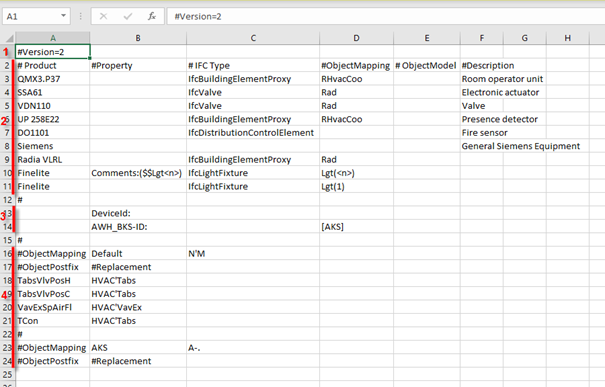
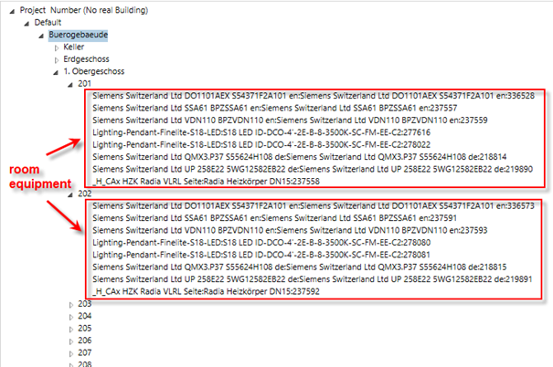
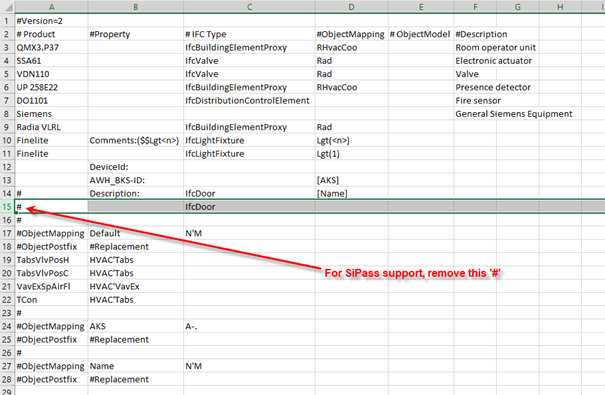
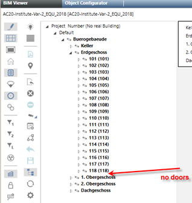
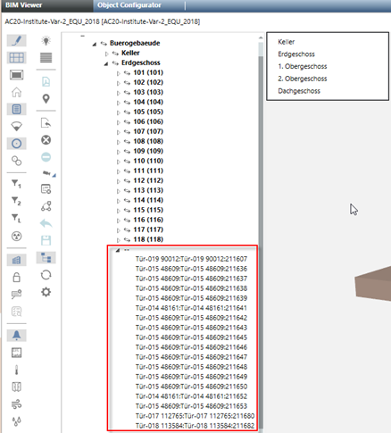

Modify Product Mapping Table
General
A Desigo CC project includes a mapping table to recognize/map room units. This product mapping table is located under: <project>\libraries\BA_Software_Desigo_BIM_Viewer_HQ_1\AssociationRules\ProductMapping_HQ.csv. This file must be customized before are using.
The product mapping table is used for two purposes:
- When loading a BIM file, this table defines the rules for the supported room equipment objects (recognition of equipment).
- When configuring associations (used for drag-and-drop), the table includes the rules for associating a Desigo CC data point to a BIM object.
Example of a Product Association Table

| Description |
1 | Version section |
2 | Equipment mapping section for "room equipment mapping" |
3 | Equipment mapping section for "Property String Mapping" |
4 | Mapping rules for "Property String Mapping" (also called "ObjectMapping") |
Defining Room Equipment
The product mapping table is used to define/recognize the relevant room equipment. Room equipment is automatically recognized when performed loading a BIM file. Room equipment are the objects displayed under the room nodes in the BIM object tree (visible in Edit mode  when the object tree
when the object tree  is selected).
is selected).

The following rules apply to define/recognize room equipment:
- Only sections 2 and 3 of the mapping table (see Example of Product Mapping Table) are used to define room equipment.
- Only the columns #Product, #Property and #IFC Type are relevant for defining room equipment. The columns #ObjectMapping, #Objectmodel and #Description are not used for this step.
- If one of these relevant columns is empty, this means “any”.
- Example: Line 8 in the Example of Product Mapping Table:
An empty #IFC Type column means "Any IFC type". - A piece of equipment is assigned to a room by its physical location (not by the relation defined in the IFC file).
- If the string defined in the #Product column is contained in the name of a BIM object, and the BIM object is of the IFC type defined in the #IFC Type column (an empty entry means “any IFC Type”), the BIM object is treated as relevant room equipment and placed under the respective room node in the BIM object tree.
- Example: Line 3 in the Example of Product Mapping Table:
If a BIM object name contains "QMX3.P37"and its IFC type is "IfcBuildingElementProyx", then the object is treated as a room unit - If the #Property column is not empty and contains a property name followed by a colon “:”, a BIM object containing such a property is treated as an equipment (provided that all other non-empty relevant columns also match)
- It is possible to define a search string in the #Property column to refine the search. The syntax of this column entry is: <Property>:<string to search>.
- The <string to search> can contain a special part of the form <n>. This string can either been used as a replacement string for “room equipment mapping” (see below), or as a mapping string for “Property String Mapping” (see below).
- If this search string is not empty, there is only a match if the defined BIM property contains the sequence defined in <string to search>.
- Example: Line 11 in the Excel table:
If the #Property field is, for example, “Comments:($$Lgt<n>)”, the Comments property of a BIM object has to contain the sequence “($$Lgt<n>)” to get a match. <n> is used as a replacement string if the <b>#NodeName</b> is not empty and also contains "<n>". <n> is used as a replacement string if the #NodeName is not empty and also contains "<n>" Otherwise it is used as a string for Property String Mapping. - Note that this Comments property must be manually set in a BIM tool (for example, Revit)
- The entries in the table are processed top-down. If an entry matches, the finding process stops for the current BIM object.
- It is therefore possible to define, for example, several entries with the same #Product string, but with a different #IFC Type and/or different #Extensions.
- The current entries in the distributed mapping table are just examples. It may be necessary to adapt the table to the requirements/situation in a specific project.
- An entry with a # in the first place is considered a comment and not used for matching.
Exceptions:
Key | Explanation |
#Version | Must be the first line and indicates the version of the file. |
#ObjectMapping | Starts a section where the rules for a specific Property String Mapping class (see below) are defined. |

Lines with beginning #Version or #ObjectMapping cannot be edited
Associating Room Equipment
The mapping table is also used during the association mapping (using drag-and-drop) to recursively associate Desigo CC data points with BIM room equipment objects (see the configuring description above). The table is not used for manually associating a single Desigo CC data point to a single BIM object (not using recursion).
The following rules apply to recursively associating Desigo CCdata points to BIM room equipment objects:
- The mapping table entry found during BIM file loading (see Finding Room Equipment) is also used to associate a distinct BIM object.
- The Desigo CC data point with the (exact) name (not description!) defined in the #NodeName column of this entry is chosen as the associated data point.
- NOTE: A special case is the use of a replacement string. You can re-use a replacement string in the NodeName field, that is defined in the #Extension column of the same entry.
- Example: If the #Extension field is “Comments:($$Lgt<n>)” and the #NodeName field is “Lgt(<n>)”, a BIM object with the Comments property containing “($$Lgt2)” will be associated to a Desigo CC room object with the name “Lgt(2)”.
- The search algorithm searches over all data points below a Desigo CC room object (not only on the first hierarchy level but also on all lower levels).
- If no data point with such a name is found, no recursive Assignment is performed.
- If the #NodeName column is empty for this entry, no recursive association is performed for this BIM object Such an object must be associated with a single, direct drag operation to the desired Desigo CC data point.
- The columns #Product, #ObjectModel and #Description are not used for this use case.
Property String Mapping using Section 3
Property String Mapping is applied if the following conditions are both true for entries in section 3 of the Example of Product Mapping Table:
- The #Property column contains a valid property name (followed by a colon).
- The #ObjectMapping column is either empty or contains an object mapping class (a class name in square brackets).
- Lines 13 and 14 in the Example of Product Mapping Table are for room equipment mapping.
- Only the column #Property is used for finding room equipment in this section
All other columns are not used for this use case.
- The column #Property states the property name that a BIM object must have defined to be considered as a room equipment
- These properties must be defined in a BIM editor (for example, Revit). Defining such properties later in the BIM Viewer is not possible.
- The property name must be followed by a semicolon (for example, for the property DeviceId, the entry must be “DeviceId):
- More than one property (line) can be defined here. All properties are checked.
- When checking properties of BIM objects while loading a BIM file, only non-empty properties are considered (for example, if a BIM object contains a property named DeviceId, but this property is empty, the object is not considered as an equipment).
- In contrast to conventional BIM Viewers, the Desigo CC BIM Viewer does not show all BIM objects (and their properties) by default. It only shows the top-structure objects (project, site, building, floors, rooms), and, if existing, the room equipment (according to the rules defined above). To see all BIM objects and properties, we recommend using the free tool BIM Vision, which can be downloaded from http://www.bimvision.eu. The IFC Type of a BIM object is the value of the property IfcEntity under the Element Specific property category.
- Only equipment that can be assigned to any room is currently supported by the BIM Viewer. This assignment is performed using a “containment” strategy, i.e. the BIM Viewer tries to find the room that (geometrically) contains the equipment. If the equipment is outside of any room, it is skipped.
Property String Mapping using Section 3
Property String Mapping is applied if the following conditions are both true for entries in section 3 of the Example of Product Mapping Table:
- The #Property column contains a valid property name (followed by a colon).
- The #ObjectMapping column is either empty or contains an object mapping class (a class name in square brackets).
- Lines 13 and 14 in the Example of Product Mapping Table are for room equipment mapping.
- Only the column #Property is used for finding room equipment in this section
All other columns are not used for this use case.
- The column #Property states the property name that a BIM object must have defined to be considered as a room equipment
- These properties must be defined in a BIM editor (for example, Revit). Defining such properties later in the BIM Viewer is not possible.
- The property name must be followed by a semicolon (for example, for the property DeviceId, the entry must be “DeviceId):
- More than one property (line) can be defined here. All properties are checked.
- When checking properties of BIM objects while loading a BIM file, only non-empty properties are considered (for example, if a BIM object contains a property named DeviceId, but this property is empty, the object is not considered as an equipment).
- In contrast to conventional BIM Viewers, the Desigo CC BIM Viewer does not show all BIM objects (and their properties) by default. It only shows the top-structure objects (project, site, building, floors, rooms), and, if existing, the room equipment (according to the rules defined above). To see all BIM objects and properties, we recommend using the free tool BIM Vision, which can be downloaded from http://www.bimvision.eu. The IFC Type of a BIM object is the value of the property IfcEntity under the Element Specific property category.
- Only equipment that can be assigned to any room is currently supported by the BIM Viewer. This assignment is performed using a “containment” strategy, i.e. the BIM Viewer tries to find the room that (geometrically) contains the equipment. If the equipment is outside of any room, it is skipped.
Supported Properties for Property String Mapping (ObjectMapping)
Not all properties of all BIM objects can be used for Property String Mapping. For performance reasons, some properties of some BIM objects are discarded when importing an .IFC file. The following list shows the properties that are supported for various BIM objects.
BIM object type (=IFC type) | Supported properties |
IfcDistributionControlElement and all "generalized" types. | All properties |
IfcDistributionFlowElement and all >"generalized" types like - IfcFlowTerminal, - IfcLightFixture, - …. | All Properties |
IfcBuildingElementProxy and all "generalized" types. | All properties |
All other types | Name Description |
That properties are referenced with their name only. PSET-Information is discarded upon IFC import.
The use case with several pieces of room equipment of the same type in the room (for example, multiple temperature sensors in a room) is only automatically supported if the correct #Extensions information is added to the BIM objects. If no extension information is defined, you have to associate these pieces of equipment by separately dragging the respective Desigo CC data points to the BIM object link want to create the association with.
Modify for SiPass Integration
The file ProductMapping.csv must be modified in advance to even view the doors of a BIM model in the BIM hierarchy structure.
The doors are enabled by delete the # in line 15 of the IfcDoor. You can create a separate product mapping table, ProductMapping_Doors.csv, if this setting applies to only one BIM graphic. The ProductMapping_Doors.csv file is Set Configurations in the Graphic Configuration expander.

BIM hierarchy structure | |
Not modified for doors | Modified for doors |
 |  |